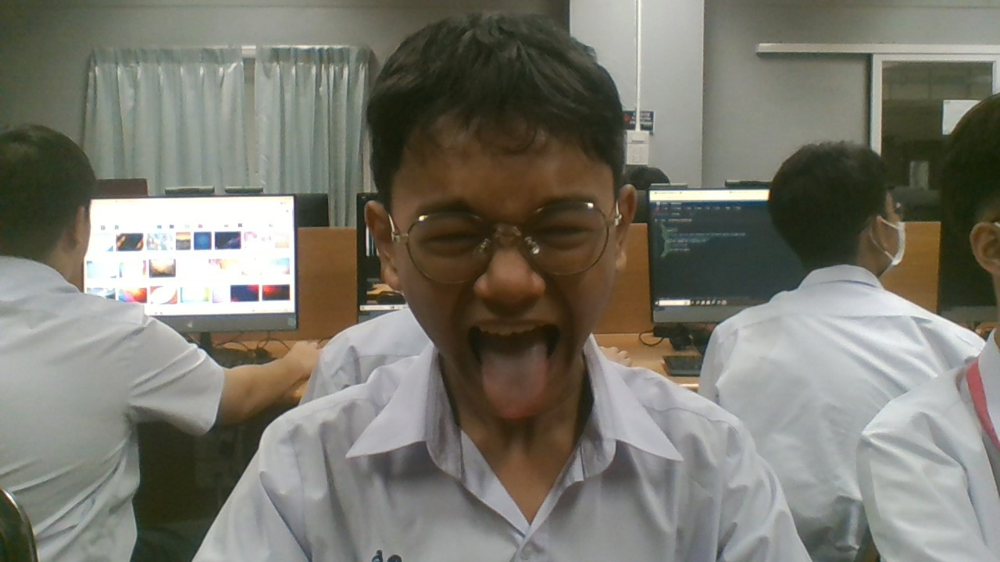

ครูดำรงค์เกียรติ เฟื่องฟุ้ง : ขอบคุณที่สอนชีวะ ชีวะไม่ใช่ชีครับ
บทเพลงที่ให้ครู

ครูอัษฎาวุฒิ ปัดมะลิด : ขอบคุณที่สอนขวาซ้ายขวา
บทเพลงที่ให้ครู


ครูวิยดา ไตรยวงค์ : ขอบคุณที่สอนเว็บไซต์แต่เรียนแล้วลืม
บทเพลงที่ให้ครู
ครูจุฎาภรณ์ อินเถิง:ขอบคุณที่สอนภาษาจีน เหมาเจ๋อตุง
บทเพลงที่ให้ครู
ธนวัฒน์ สุดเสน่หา ห้อง 204 เลขที่ 36